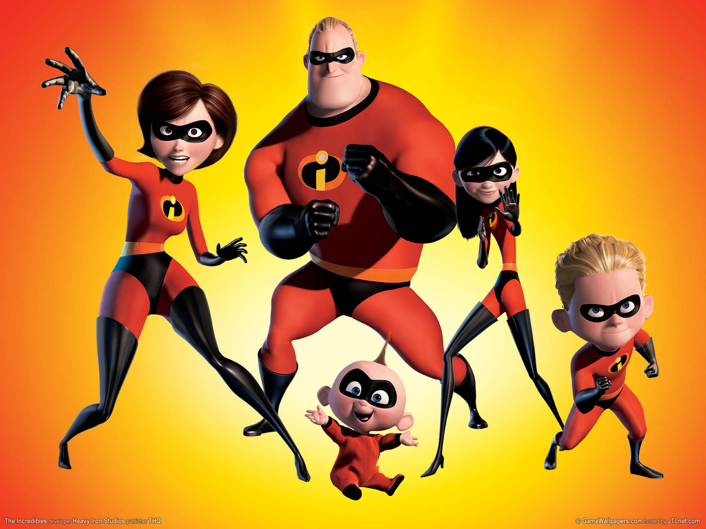
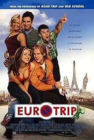

Mis 3 peliculas favoritas.
- Los increibles.
Una pelicula sobre una familia de superheroes en un mundo donde los supers son ilegales.
Esta pelicula me gusta mucho ya que tiene un lore muy profundo y bien hecho.

- Eurotrip.
Esta pelicula trata sobre un chico que hace un viaje hasta alemania con sus amigos con el objetivo de conocer una chica.
Me encanta esta pelicula por su comedia y su trama es realmente muy entretenida aunque tenga chistes un poco subidos de tono.

- 10 things i hate about you.
Trata sobre Cameron el cual para poder salir con Bianca, debe encontrarle un novio a su hermana rebelde, Kat, y contrata al misterioso Patrick.
Aparte de la trama esta pelicula tiene muchos momentos emotivos y hasta llegue a relacionarme mucho con ciertas situaciones en la pelicula.